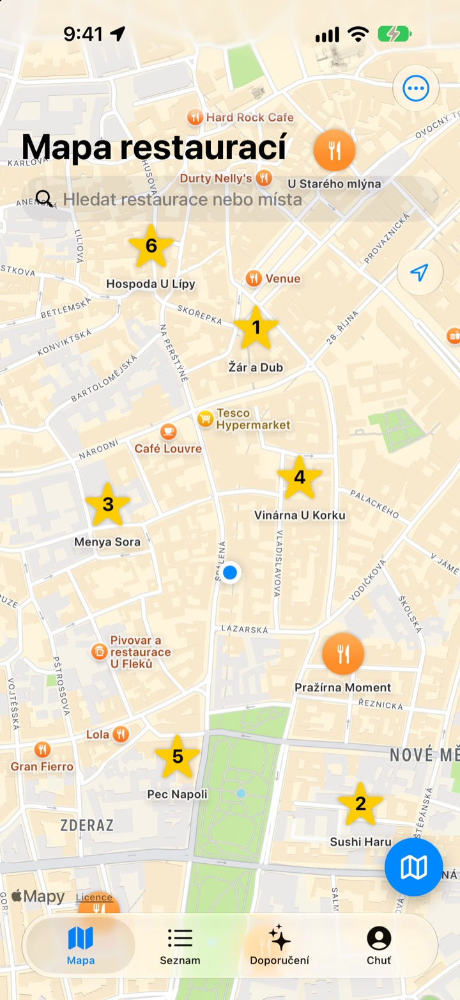
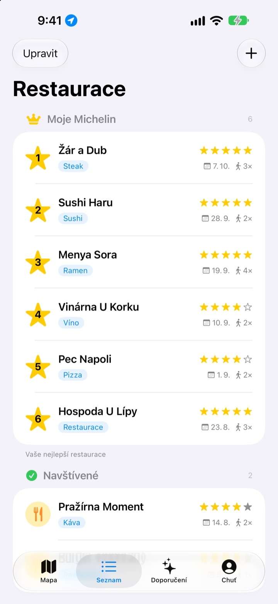
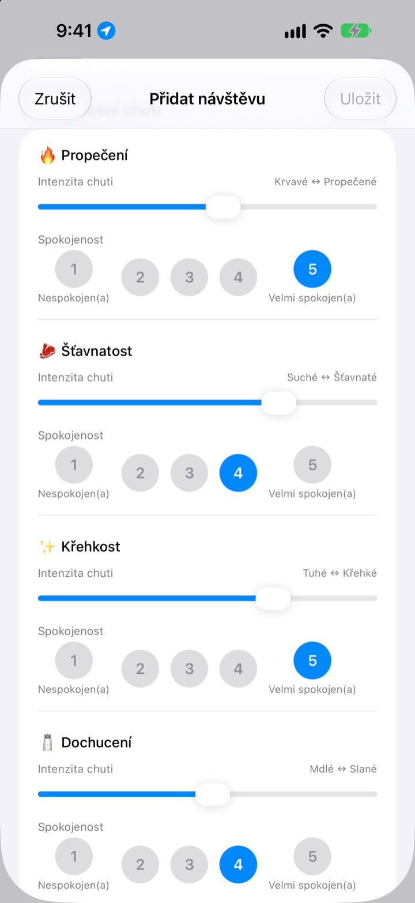
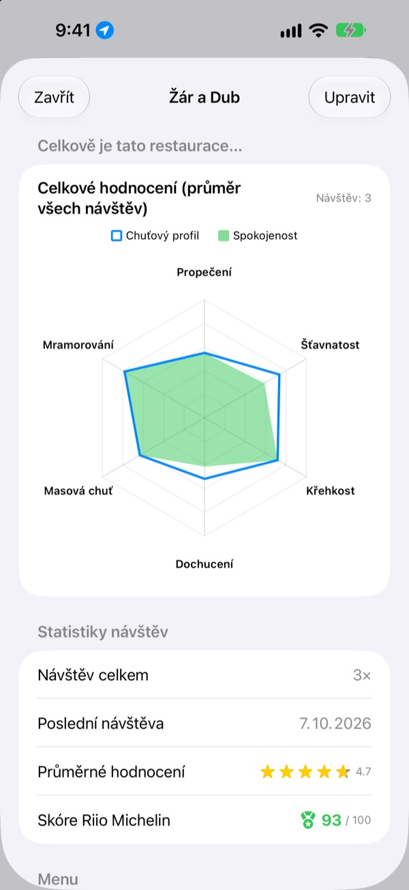

Místa, kde vám chutnalo,
už nezapomenete
Označte na mapě restaurace, kde jste byli i kam se chystáte, a při každé návštěvě si zapište, co jste si dali, fotky a jak to chutnalo. Když nevíte, kam na jídlo, odpověď najdete ve vlastních záznamech.
Všechny funkce jsou zdarma. Bez registrace, záznamy zůstávají ve vašem iPhonu.

Ohodnoťte jídlo
Vyberte druh jídla a nastavte, jak výrazná byla každá chuť a jak vám chutnala. Stejná kritéria i stejný výpočet jako u návštěvy v aplikaci.
Bylo to výborné, ale co jsem si to dal?
Víte, že se vám restaurace líbila, ale název se vám rozplývá, a co jste si objednali nebo jestli byl vývar moc slaný, už vůbec nevíte. Tak znovu hledáte a čtete recenze cizích lidí. Insaeng uchová na mapě to, co jste sami ochutnali, abyste další podnik vybírali podle vlastní zkušenosti.
Navštívené, Chci vyzkoušet a vlastní Michelin
Vyhledejte na mapě nebo klepněte na místo poblíž a hned je uložené. Oddělte podniky, kde jste byli, od těch, které chcete vyzkoušet, a šest oblíbených seřaďte od 1 do 6.
Když se vás někdo zeptá na tip, stačí ukázat seznam.

Otázky šité na míru jídlu
Výraznost chuti, třeba pálivost nebo slanost, nastavíte posuvníkem a to, jak vám chutnala, hodnotíte zvlášť od 1 do 5. U steaku jde o propečení a šťavnatost, u sushi o rýži a rybu, u ramenu o vývar a nudle.
Každá návštěva uchová i jídlo, fotky, hvězdičky a poznámky.

Kam se vrátit, uvidíte v číslech
S více návštěvami ukáže každá restaurace celkové hodnocení z průměru všech návštěv a skóre Riio Michelin ze 100, které spojuje hvězdičky a spokojenost.
Když odejdete z uložené restaurace, za chvíli přijde připomínka, abyste návštěvu zapsali.

Začněte ve třech krocích
- 1
Uložte restauraci
Vyhledejte ji na mapě nebo klepněte na místo poblíž.
- 2
Zapište návštěvu
Jídlo, fotky, hvězdičky a chuť. Hodnocení chuti je dobrovolné.
- 3
Vyberte další
Podívejte se na top 6 a skóre a vyrazte s Apple Mapami, Kakao Map nebo Naver Map.
Co se hodnotí u jednotlivých jídel
- 🍽️ Obecné
- Pálivost, Výraznost, Sladkost, Slanost, Mastnost, Přirozená chuť
- 🥩 Steak
- Propečení, Šťavnatost, Křehkost, Dochucení, Masová chuť, Mramorování
- 🍣 Sushi
- Shari (rýže), Neta (ryba), Wasabi, Vyváženost, Tvarování, Teplota
- 🍜 Ramen
- Vývar, Nudle, Chashu, Přísady, Teplota, Vyváženost
- 🍕 Pizza
- Těsto, Omáčka, Sýr, Propečení, Přísady, Vyváženost
- 🍷 Víno
- Tělo, Taniny, Kyselost, Aroma, Dochuť, Vyváženost
- ☕ Káva
- Kyselost, Tělo, Chuť, Dochuť, Sladkost, Vyváženost
Ostatní jídla se hodnotí obecnými kritérii z prvního řádku. Můžete si vytvořit i vlastní kategorie.
Časté dotazy
Jak přidám restauraci?
Do vyhledávacího pole nahoře na mapě zadejte název restaurace a ve výsledcích klepněte na „Přidat do mých restaurací“. Restauraci můžete přidat i přímo klepnutím na místo v okolí, které vidíte na mapě. Pokud se místo ve vyhledávání neobjeví, přidejte ho ručně na své aktuální poloze nebo na místě, které vyberete na mapě.
Co znamená Navštívené, Chci vyzkoušet a Top 6?
Navštívené – restaurace, kde jste už byli. Můžete k nim zapisovat návštěvy. Chci vyzkoušet – restaurace, kam se chcete jednou podívat. Po návštěvě je v detailu restaurace přepněte na Navštívené. Top 6 (Moje Michelin) – šest nejoblíbenějších restaurací, kterým dáte pořadí od 1. do 6. místa. Restauraci ze seznamu Chci vyzkoušet nelze zařadit do Top 6.
Musím hodnotit chuť?
Ne, je to dobrovolné. Když hodnotíte, výraznost chuti a spokojenost se promítnou do celkového hodnocení restaurace a počítají se do skóre Riio Michelin.
Kdy přijde upozornění „Jak se vám dnes líbilo?“
Když pobudete u uložené restaurace déle než 5 minut a odejdete, upozornění přijde přibližně za 40 minut. Tato funkce vyžaduje polohu s volbou „Vždy“ a povolená oznámení. Pokud upozornění nechcete, vypněte oznámení v Nastavení > Aplikace > Insaeng nebo přepněte polohu na „Při používání aplikace“. Poloha se vyhodnocuje jen v zařízení. Trasy vašeho pohybu se neukládají ani nikam neodesílají.
Dá se aplikace používat bez přístupu k poloze?
Ano. Restauraci přidáte tak, že místo vyberete přímo na mapě, a návštěvy zapisujete jako obvykle. Nebude fungovat jen zobrazení aktuální polohy a upozornění po návštěvě.
Vyhledávání nic nenachází
Vyhledávání míst vyžaduje připojení k internetu. Zkuste jiný název nebo kratší klíčové slovo. Pokud místo stále nenajdete, vyberte ho na mapě a přidejte ručně.
Kde se záznamy ukládají? Synchronizují se s dalšími zařízeními?
Restaurace, záznamy návštěv i fotky se ukládají jen v tomto iPhonu. Současná verze synchronizaci s dalšími zařízeními nepodporuje a zálohování a obnova přes iCloud v nastavení zatím nefungují. Data aplikace jsou ale součástí celkové zálohy iPhonu (záloha na iCloud nebo do počítače).
Chci smazat všechny záznamy
V nastavení na obrazovce mapy klepněte na „Smazat všechna data“ a restaurace i záznamy návštěv se smažou. Tuto akci nelze vrátit zpět. Chcete-li beze zbytku smazat i fotky, odstraňte aplikaci.
Zůstanou mi záznamy, když aplikaci odinstaluji a znovu nainstaluji?
Ne. Záznamy se ukládají jen v zařízení, takže se s odstraněním aplikace smažou i ony. Než aplikaci odstraníte, dobře si to rozmyslete.
Je opravdu všechno zdarma?
Ano. Všechny funkce jsou zdarma, bez reklam a bez účtu. „Podpořit vývojáře“ v nastavení je zcela dobrovolné a nic dalšího neodemyká.
Pokud jste odpověď nenašli, pošlete nám zprávu přímo z aplikace v Nastavení > Podpora nebo napište na mizzking75@gmail.com. Uveďte prosím verzi aplikace, model iPhonu a na které obrazovce jste co dělali – pomůže nám to vše rychleji prověřit.